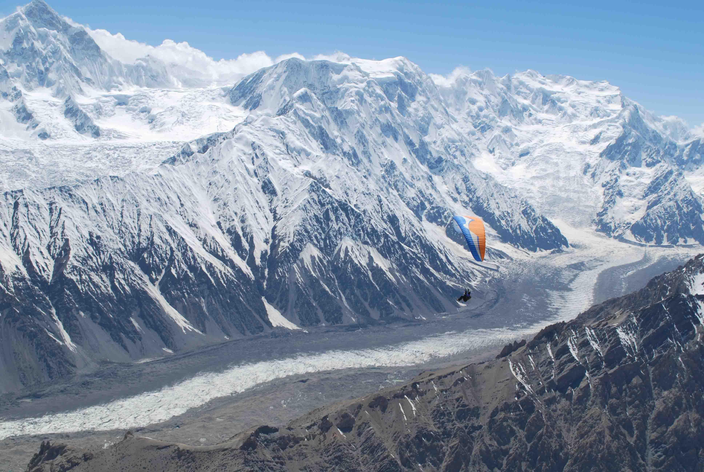

<div class="portfolio-single-load clearfix">
    <div class="custom-full-width-box">
        <div class="custom-container">
            <div class="custom-row align-items-center">
                <div class="custom-image-column">
                    
                </div>
                <div class="custom-text-column">
                    <h2 class="custom-heading">Batura Glaciers</h2>
                    <p class="custom-paragraph">
                        <b>The Batura Glacier</b>, spanning an impressive 57 kilometers in length, stands as one of the longest and largest glaciers outside the polar ice caps, drawing adventurers and nature enthusiasts from around the globe. Nestled within the Gojal region of Gilgit-Baltistan, Pakistan, this majestic glacier serves as a vital source of fresh water, contributing to the region's ecological balance.
                        <br><br>
                        <b>Geography and Landscape</b>: The glacier's vast expanse, stretching from west to east, presents a breathtaking panorama of rocky moraines, verdant pastures, and towering peaks, including more than 14 summits exceeding 7000 meters in elevation. Its lower portions resemble a grey sea of rocks and gravelly moraine, while higher elevations offer pristine expanses of ice and snow.
                        <br><br>
                        <b>Significance</b>: The Batura Glacier holds immense ecological significance, not only as a source of fresh water but also as a habitat for diverse flora and fauna. It supports a variety of wildlife, including snow leopards, ibex, and migratory birds, making it a hotspot for biodiversity in the region.
                        <br><br>
                        <b>Adventure Opportunities</b>: Adventure-seekers flock to the Batura Glacier to indulge in activities such as trekking, mountaineering, and ice climbing. Its rugged terrain and awe-inspiring vistas provide an unparalleled backdrop for outdoor exploration and adventure.
                        <br><br>
                        <b>Cultural Heritage</b>: The surrounding areas near the Batura Glacier are inhabited by indigenous communities, including Wakhi-speaking people, who have preserved their cultural heritage for centuries. Visitors have the opportunity to interact with local communities and learn about their traditional way of life.
                        <br><br>
                        <b>Impact of Climate Change</b>: Like many glaciers around the world, the Batura Glacier is vulnerable to the effects of climate change. Rising temperatures and changing precipitation patterns pose a threat to its stability, highlighting the urgent need for conservation efforts to protect this natural wonder for future generations.
                        

                    </p>
                </div>
            </div>
        </div>
    </div><!-- .custom-full-width-box end -->

</div><!-- end single-project -->
